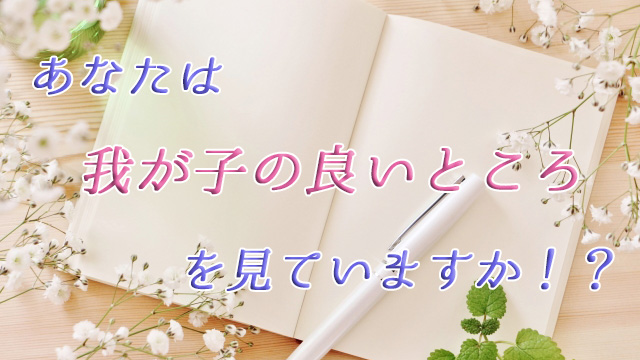

前回の記事で、親が変われば子どもも変わるという話をした。これは親の視点が変わることで子どもの隠れた美点に光が当たり、そこに気づくことで子どもの行動も良い方向へ進むということを言いたかったのだ。
親の視点が変わるとはどういうことか。
たとえば多くの親は子どもの欠点や弱点、至らない所に目を向けがちだが、思い切って子どもの長所や優れている部分つまり美点に注目してみる。不足している部分にばかり目を向けるのではなく、足りているところ良いところを数え上げてみる。そうするとどうなるか。
実際にやってみるといかに我が子の長所を見過ごしているかに気づくだろう。
ちなみに私は最近学校の保護者会やセミナーなどで親たちに「我が子の良いところノート」を書くよう勧めている。
平凡なことでよいから我が子の良いところを毎日ノートに記録するというもの。
「ちゃんとあいさつができた」「言われなくても朝起きられた」「部活でレギュラーになれなかったけど腐らず頑張った」「靴をそろえた」など、当たり前じゃないかと思うものを並べてみる。
これを一ヵ月続けてみるとどうなるか。必ず子どもの行動（態度・姿勢）は変わる。
そう言って親たちに勧めているが、結果はいまのところ予想以上に良い反応が返ってきている。ノートを書き始めて一週間足らずで「子どもの行動が変わった」「子どもとの関係が変化した」という人が多いのだ。
あれほど勉強しない子が珍しく机に向かい、小テストで良い点を取った。
反抗期の娘が穏やかな表情を見せるようになった。
ギクシャクしていた子どもとの関係が改善され家庭の雰囲気も良くなった。
その他ここに書けない具体的エピソードもたくさん届いている。私の聞いた限りで全員が「良い方へ変わった」という。私自身その変化の早さに驚いているが、大切なことは子どもの変化より親の変化、それはつまり親の側の視点、認識の変化が大きいということだ。
親の気づきで子は変わる
子どもの「良いところ」をノートに記すことで親の視点はどう変わったのだろうか。
ある親は「このままでは大変なことになる」と先の心配ばかりしていたが子どもの今が大事だと気づいたという。これはとても大きな気づきだと思う。
子ども―特に思春期の子―にとってはいま過ごしている一日いちにちがとても貴重な瞬間であり、彼らなりに精一杯さまざまな学びを得ているのだということを親は忘れがちだ。
親は常に先回りして子どもの将来への心配を先行させている。
「こんな成績では高校大学受験が心配だ」
「ウチの子はダラシない所があるから社会でちゃんとやっていけるか心配だ」など常に先のことに目を向けている。
そうして子どもの今の頑張りを見過ごしてしまう。
だがこの親のように、子どもの「今」の大切さに気づき子どもの「今」としっかり向き合うことで子ども自身も良い方向へ変わると気づくことは、とても素晴らしいことだと思う。
親の心配の大部分は「起こってもいない未来」に関するものに過ぎない。それは妄想であり子どもに対する不信感の表明に他ならない。
そんな妄想にふけるヒマがあるなら、子どもの今にこそ注目し、良いところを少しでも認めてあげて欲しい。不足を数え上げるのではなく充足にこそ目を向けて欲しい。その姿勢は子どもにもすぐ伝わるだろう。
その他「子どもの良い点を毎日書いているうち、こんなに良いところがあったのだと今さらながら気がついて涙が出た」「自分は子どもをホメて来たつもりだったが言うことを聞かない理由が分かった。なぜなら口先でホメているだけで心の中では将来への心配が先立っていたから」などの報告が寄せられている。
また別の親は、テレビを見ている我が子に対し「今までならテレビばっかり見てと怒っていたはずなのに、楽しそうだなと共感できるようになった」と心境の変化を語ってくれた。
これらの親の声に共通しているのは、子どもに対する眼差しの変化だ。あえて子どもの美点を見ようとする姿勢によって、親は自分が子どもとどう接して来て、何を見逃してきたのか。つまり親は親自身に気づいたということだ。後の展開は自動で起こっている。
すなわち、気づき→視点（認識）の変化→眼差しの変化→親子関係の変容→子どもの変化
親が「自分のあり方」に気づいたことで後はドミノ倒しのように関係が変化する。そういう意味では子どもの変化はオマケのようなものだ。
もうひとつ。親たちの変化で特筆すべきはコントロール欲求の手放しである。
子どもの不足部分にばかり目が行っていたのは、根底にコントロール欲求があるからだと自然と気づきそれを手放したということ。その結果それまで見えていなかった子どもの美点が次々と浮かび上がってきた。
当然親がコントロール欲求を手放せば、子どもも余計な反抗を止めて前向きに動き出すということになる。
こうして見てくると「親が変わる」というのは難しいことではないと分かる。単に子どもの良いところを毎日ノートに書くだけでいいからだ。（毎日は難しいなら思い出したときだけでも良い）
最後にもう一つだけ印象的だった母親の言葉を記したい。
「子どもの良いところノートを書いているうち、子どもだけでなく夫や家族そして自分自身にも感謝の言葉が浮かんできた。自分も子育てに一生懸命頑張ってきたのだと」
一生懸命頑張ってきた自分に気づくこと。実はこれが一番大きな気づきかもしれない。